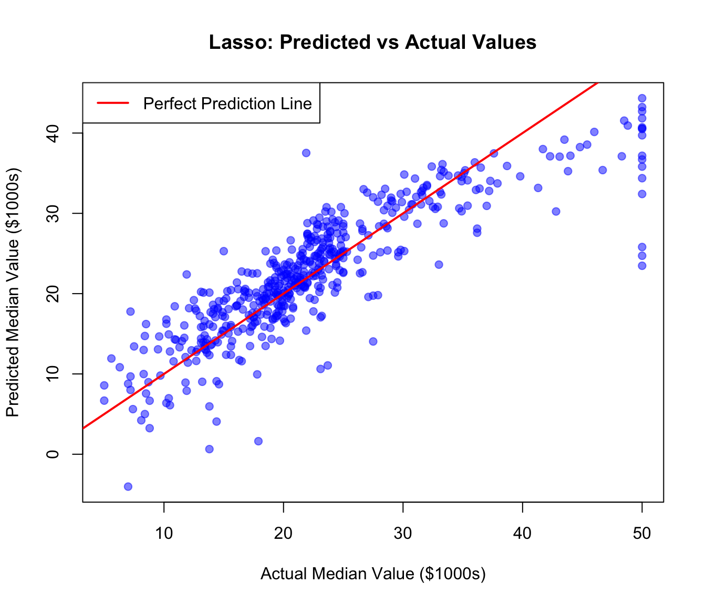

Stepwise regression: Add/remove variables using p-values or AIC with step()
Problems: Manual, unstable, struggles with many correlated predictors
Lasso Approach:
Include all variables and let Lasso decide automatically
L1 penalty shrinks weak coefficients to exactly zero
Only important variables remain in the model
Use cross-validation to tune optimal lambda value
Advantages: Simple, stable, perfect for high-dimensional data
About the Analysis
Packages Used:
glmnet - For Lasso regression
lm - Ordinary least squares regression model
MASS - Contains Boston dataset
Boston Housing Dataset:
506 observations
14 variables
Target: medv (median home value)
Predictors: crime rate, room number, age, etc.
Key Concepts
Coefficients: Numerical values that represent the relationship strength between each predictor variable and the target variable. A larger absolute value indicates stronger influence.
R-squared (R²): A statistical measure (ranging from 0 to 1) that indicates the proportion of variance in the dependent variable that is predictable from the independent variables. Higher values indicate better model fit.
Penalty (L1): In Lasso regression, the penalty is the sum of absolute values of coefficients. This can force some coefficients to become exactly zero, effectively performing feature selection.
Regularization: A technique to prevent overfitting by adding a penalty term to the loss function, discouraging overly complex models with large coefficients.
Lambda (λ): The regularization strength parameter. Higher λ values create stronger penalties, leading to more coefficients being shrunk toward zero.
# OR load your own CSV file from computer:# my_data <- read.csv("path/to/your/file.csv")# Example: my_data <- read.csv("C:/Users/YourName/Documents/data.csv")X <-as.matrix(Boston[, -14])y <- Boston$medv
What we did: Loaded the Boston dataset and separated predictors (X) from the target variable (y)
To use your own data: Replace the data loading with read.csv() and adjust column selection
Step 3: Fit Linear Model
# Fit a normal linear modellm_model <-lm(medv ~ ., data = Boston)lm_coef <-coef(lm_model)lm_r_squared <-summary(lm_model)$r.squaredcat("--- Base lm() Coefficients ---\n")
--- Base lm() Coefficients ---
print(lm_coef)
(Intercept) crim zn indus chas
3.645949e+01 -1.080114e-01 4.642046e-02 2.055863e-02 2.686734e+00
nox rm age dis rad
-1.776661e+01 3.809865e+00 6.922246e-04 -1.475567e+00 3.060495e-01
tax ptratio black lstat
-1.233459e-02 -9.527472e-01 9.311683e-03 -5.247584e-01
cat("\nR-squared:", lm_r_squared, "\n")
R-squared: 0.7406427
Step 4: Fit Lasso Model
# Fit a lasso model (with cross-validation)cv_model <-cv.glmnet(X, y, alpha =1)best_lambda <- cv_model$lambda.mincat("Best lambda from cross-validation:", best_lambda, "\n")
Best lambda from cross-validation: 0.019303
lasso_model <-glmnet(X, y, alpha =1, lambda = best_lambda)
Key Point: Cross-validation automatically selects the optimal lambda value
Observation: Lasso achieves similar performance while potentially simplifying the model by shrinking some coefficients
Plot: Predicted vs Actual
# Predicted vs Actual valuesplot(y, lasso_predictions, main ="Lasso: Predicted vs Actual Values",xlab ="Actual Median Value ($1000s)", ylab ="Predicted Median Value ($1000s)",pch =19, col =rgb(0, 0, 1, 0.5))abline(0, 1, col ="red", lwd =2)legend("topleft", legend ="Perfect Prediction Line", col ="red", lwd =2)

What this shows: Points close to the red line indicate accurate predictions
Business Applications
Real-World Uses:
Sales Forecasting
Predict future sales based on marketing spend, pricing, and seasonality to plan inventory and budgets.
Customer Churn Prediction
Identify which customer behaviors indicate they’re likely to leave, so you can take action early.
Marketing Channel Optimization
Use Lasso to find which advertising channels (social media, TV, email) actually drive revenue and cut the rest.
Employee Attrition Modeling
Predict which employees might quit based on workload, satisfaction scores, and performance reviews.
Demand Forecasting
Estimate product demand using weather, promotions, and foot traffic to optimize stock levels.
Loan Default Prediction
Banks use regression to predict who might default on loans based on income, credit history, and debt levels.
Real Estate Pricing
Automatically estimate property values using location, size, age, and neighborhood features.
Exercise: Try With Another Dataset
Task:
Run the same workflow (load → prepare → fit → compare) using a different dataset such as mtcars, iris, or your own CSV.
Steps:
Load a dataset: df <- mtcars
Pick a target variable: y <- df$mpg
Create predictors: X <- as.matrix(df[, -1])
Fit linear & Lasso models (same code as earlier)
Compare R² and identify important predictors.
Goal:
See how model behavior changes with a new dataset.